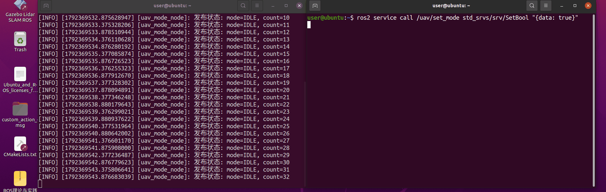
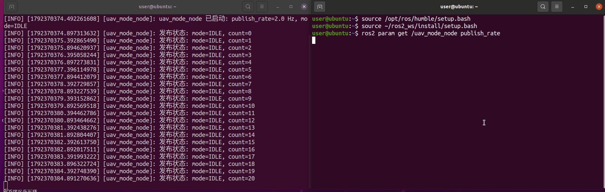
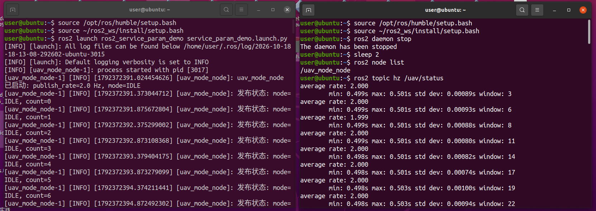

ROS 2 服务与参数基础实验（uav_mode_node）
本页面介绍 ros2_service_param_demo 模块：用一个「无人机模式节点」演示 ROS 2 的服务调用、参数在线修改与话题发布。
源码位置：src/chap2/ros2_service_param_demo
| 文件 | 说明 |
|---|---|
| uav_mode_node.py | 唯一节点：提供服务、声明参数、周期发布状态话题 |
| main.py | 模块入口，python3 main.py 即可启动 |
| launch/service_param_demo.launch.py | launch 启动文件（含参数初值） |
该模块是「基于强化学习的四旋翼无人机飞行控制」项目的第二个前置基础实验：第一个实验（ROS 2 话题发布订阅基础实验）验证了单向消息流，本实验补齐模式切换（起飞 / 悬停 / 降落需要调用方拿到成功或失败）与在线调参（不同飞行阶段要改频率或阈值，不能重启节点）这两件基础设施。
与其他模块的区别
本模块只演示 ROS 2 服务与参数机制，不连接仿真器、不发送任何飞控指令、不使用自定义消息，与 uav_keyboard_control、carlair_ros_bridge 等空域载具模块没有功能重叠。
1. 接口说明
| 接口 | 类型 | 说明 |
|---|---|---|
服务 /uav/set_mode |
std_srvs/SetBool |
data: true → FLYING；data: false → IDLE；返回 success 与 message |
参数 publish_rate |
double，默认 2.0 |
状态发布频率（Hz），取值范围 (0, 100]，运行中可改 |
参数 start_mode |
string，默认 IDLE |
启动时的初始模式，取值 IDLE / FLYING；启动后不可修改（运行中改模式请调 /uav/set_mode） |
话题 /uav/status |
std_msgs/String |
内容形如 mode=FLYING, count=12 |
start_mode只接受IDLE与FLYING，与服务/uav/set_mode能切换的两种模式保持一致：SetBool只有真假两态，无法表达「降落」，因此本模块不把LANDING作为可设置的模式。降落属于后续控制器模块的职责，那一步需要比SetBool更丰富的接口。
2. 运行环境
| 项目 | 版本 / 说明 |
|---|---|
| 操作系统 | Ubuntu 20.04 / 22.04（VMware 虚拟机），均实测通过 |
| Python | 3.10（22.04 自带）/ 3.8（20.04 自带），与 Humble 匹配 |
| ROS | ROS 2 Humble |
| 依赖 | 仅使用 ROS 2 自带功能包：rclpy、std_msgs、std_srvs、launch、launch_ros |
在虚拟机中确认环境：
lsb_release -a # Ubuntu 22.04
echo $ROS_DISTRO # humble
python3 --version # Python 3.10.x
2.1 环境准备
如果还没装 ROS 2 Humble，先按 安装 ROS 页面配置好。装好后把环境写进 ~/.bashrc，新终端会自动加载：
echo "source /opt/ros/humble/setup.bash" >> ~/.bashrc
source ~/.bashrc
echo $ROS_DISTRO # 应输出 humble
不要同时 source Noetic 与 Humble，否则会出现
ROS_DISTRO was set to 'noetic' before的警告。
3. 编译
mkdir -p ~/ros2_ws/src
cp -r <本仓库路径>/src/chap2/ros2_service_param_demo ~/ros2_ws/src/
cd ~/ros2_ws
source /opt/ros/humble/setup.bash
colcon build --packages-select ros2_service_param_demo
source install/setup.bash
4. 运行
# 方式 A：launch 启动（推荐）
ros2 launch ros2_service_param_demo service_param_demo.launch.py \
publish_rate:=5.0 start_mode:=FLYING
# 方式 B：main 脚本入口
python3 ~/ros2_ws/src/ros2_service_param_demo/main.py
# 方式 C：单节点并指定参数
ros2 run ros2_service_param_demo uav_mode_node \
--ros-args -p publish_rate:=5.0 -p start_mode:=FLYING
节点启动后输出：
[INFO] [...] [uav_mode_node]: uav_mode_node 已启动: publish_rate=2.0 Hz, mode=IDLE
[INFO] [...] [uav_mode_node]: 发布状态: mode=IDLE, count=0
4.1 调用服务切换模式
另开终端（同样要 source ROS 2 与工作空间环境）：
ros2 service list
ros2 service call /uav/set_mode std_srvs/srv/SetBool "{data: true}"
ros2 service call /uav/set_mode std_srvs/srv/SetBool "{data: false}"
4.2 在线修改参数
ros2 param list
ros2 param get /uav_mode_node publish_rate # 显示 2.0
ros2 param set /uav_mode_node publish_rate 5.0 # 输出立刻变密
ros2 param set /uav_mode_node publish_rate -1.0 # 被拒绝：publish_rate 必须大于 0
4.3 观察话题
ros2 topic echo /uav/status
ros2 topic hz /uav/status # 频率与 publish_rate 一致
结束运行：在终端按 Ctrl+C。正常情况下只会看到节点打印的 uav_mode_node 被手动终止 后退出（退出路径已捕获 KeyboardInterrupt，不会再打印 Traceback）；若还跟着一行 Failed to publish log message to rosout: publisher's context is invalid，同样是节点销毁后的正常现象。
三点注意：① 方式 B 是本地源码调试入口，它通过 ament 索引查找
ros2_service_param_demo，必须先source ~/ros2_ws/install/setup.bash，干净终端只 source ROS 2 会报package 'ros2_service_param_demo' not found；需要改参数请用方式 A（ros2 launch ros2_service_param_demo service_param_demo.launch.py publish_rate:=5.0 start_mode:=FLYING）或方式 C。②publish_rate是 double 类型，请写0.0而不是0（整数字面量会报类型错误）；取值范围 (0, 100] Hz。③ 启动参数非法时（publish_rate超出范围、start_mode不在IDLE/FLYING之内）节点会告警并回退到默认值，同时把回退值写回参数，所以ros2 param get显示的值始终等于实际生效值，不会出现"参数是 5.0、实际按 2.0 发布"的不一致。
5. 运行效果
调用服务切换飞行模式：

在线修改参数，输出频率立刻变化：

launch 启动与话题频率：

6. 常见问题
| 现象 | 原因 | 解决方法 |
|---|---|---|
ros2: command not found |
未 source ROS 2 环境 | source /opt/ros/humble/setup.bash，或写入 ~/.bashrc |
Package 'ros2_service_param_demo' not found |
未 source 工作空间 | source ~/ros2_ws/install/setup.bash |
ros2 param set 后频率没变 |
节点名写错或参数未实现回调 | ros2 node list 确认节点为 /uav_mode_node；本模块在参数回调中重建定时器 |
| 提示混用了 noetic 与 humble | 同一终端加载了两套 ROS 环境 | 新开干净终端，只加载 Humble |